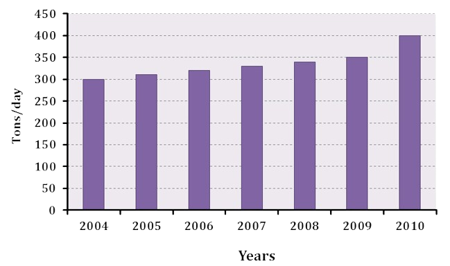

Bin It Right
Learn about the importance of waste segregation and explore fun activities to make a difference!
Why is Waste Segregation Important?
Proper waste segregation helps reduce the amount of waste that ends up in landfills, thereby minimizing environmental pollution and conserving natural resources. By separating waste into recyclables, compostables, and trash, we can make recycling more effective and reduce greenhouse gas emissions caused by improper disposal.
When we segregate waste, we also support the recycling industry, decrease the strain on waste management systems, and help create a cleaner, healthier environment for future generations. It’s a small step that makes a big difference!
Our goal is to provide an engaging platform where users can learn about proper waste management practices through interactive games, fun activities, and informative content. We believe that small actions can lead to big changes, and we’re here to guide you every step of the way!
Play the Sorting Game
Test your skills and learn how to sort waste correctly with our interactive game.
Play NowThe Impact of Improper Waste Segregation
Here are some alarming statistics:
- Over 91% of plastic waste is not recycled, ending up in landfills or oceans.
- Improper waste segregation contributes to 20% of global methane emissions, accelerating climate change.
- An average family generates about 2,000 pounds of waste annually, much of which could be composted or recycled.
- Landfills are rapidly filling up, with some regions expected to run out of landfill space within the next decade.

By segregating waste correctly, we can reduce pollution, conserve resources, and mitigate climate change.